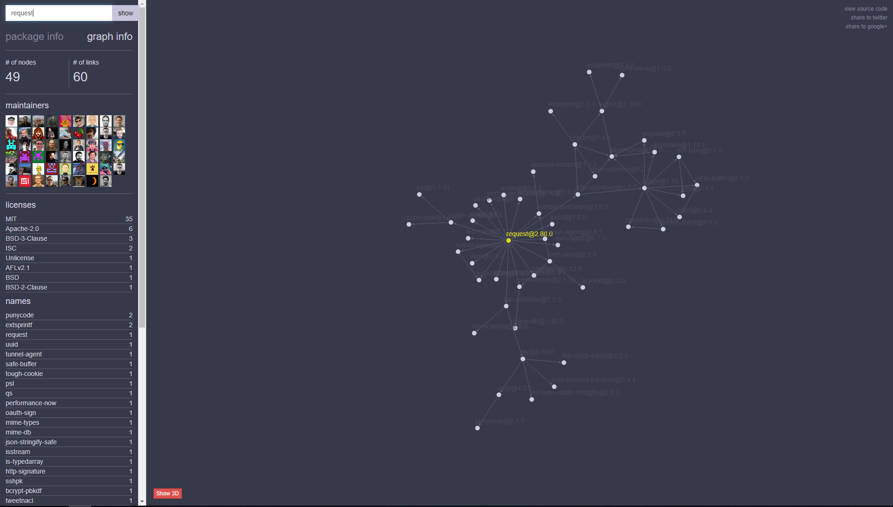
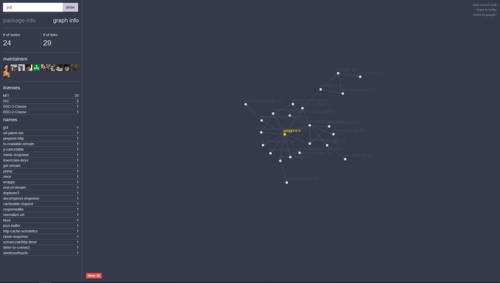
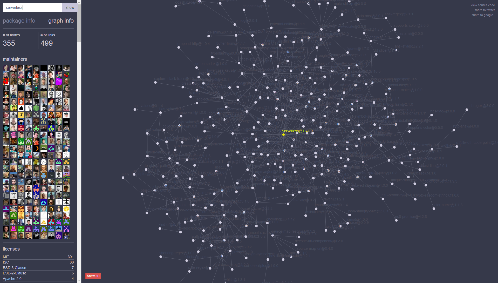

前言
Serverless Framework是无服务器应用框架和生态系统，旨在简化开发和部署AWS Lambda应用程序的工作。Serverless Framework 作为 Node.js NPM 模块提供，填补了AWS Lambda 存在的许多缺口。它提供了多个样本模板，可以迅速启动 AWS Lambda 开发。
毫无疑问，在最近的几年里，微服务渐渐成为了一个相当流行的架构风格。微服务大致从 2014 年起，开始流行开来。而 Serverless 是从 2016 年起，开始受到开发者的关注。并且从其发展趋势来看，它大有可能在几年后，拥有今天微服务一样的地位。可见，它是一个相当具有潜力的架构。
关于什么是 Serverless 架构以及如何使用它进行应用开发，本文不作其他介绍，感兴趣的同学可以学习：
Serverless 应用开发指南
本文更多的将从依赖关系的角度探讨无服务器的安全性。
依赖管理
依赖性体现在软件组，我们的软件需要它们才能正确运行。 利用其他软件可以加快开发过程，同样也会不可避免地带来安全问题。 导入一个软件包时，可能会需要导入其他软件包。
Node Package Manager（NPM）用于管理依赖项。 当我们要向代码中添加软件包时，它将确定所需安装的软件包并对所需的软件包进行适当更改。 NPM这种简单性使我们非常容易安装许多软件包，但可能会更容易将存在漏洞的软件引入我们的代码库。
有时候我们必须考虑所需软件包中使用的依赖项。 例如，软件需要发出HTTP请求。 可以使用内置的http库，但是代码写起来太麻烦了。
1 | const options = { |
如果是我，我会选择request库，写起来太容易了：
1 | const request = require('request'); |
使用request库所需的代码行少得多。 但也并不是特别好， 该库需要另外20个软件包才能有效地工作， 观察依赖关系树时，总共有49个依赖关系。

查询依赖关系的工具：http://npm.anvaka.com/#!/
got库是另一种代替http库的方案：
1 | (async () => { |
使用该库比request库的代码更复杂，但是它只具有11个依赖项（总共24个）

漏洞的管理
最佳的情况是，查看每个依赖项以了解整个软件所包含的内容。 但现实是，根据导入的软件包数量，效率会极其低。 相反，我们可以利用Node附带的Node Package Manager（NPM）。 它可以审核所有软件包。
1 | npm install request got |
之后，可能要考虑对软件包进行定期审核。
看看 Serverless Framework 的依赖关系

如上图，无服务器软件包具有40个依赖关系，总共需要355个软件包。那么我受攻击的面就提高为355倍，gg…
所以定期更新无服务器软件包是必然的。
结论
在编写无服务器应用程序时，最好检查一下导入的软件包、依赖关系树和已知漏洞。


评论加载中